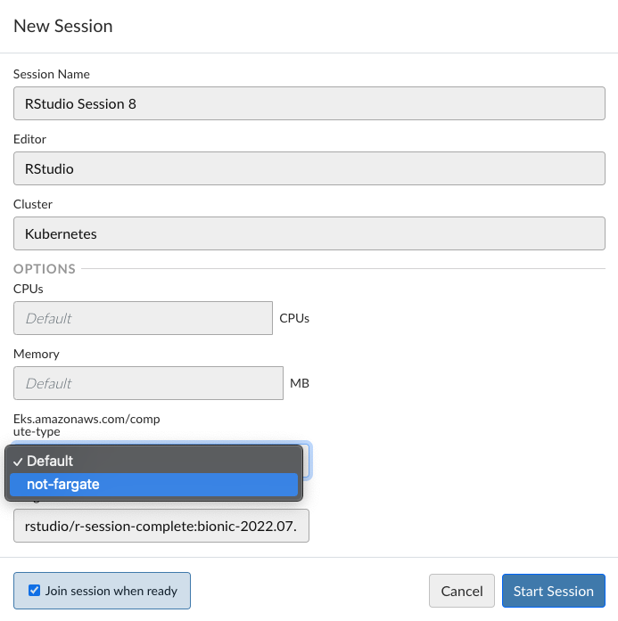

Using Amazon Fargate with Posit Team
This article explains how to set up Amazon Fargate with Posit Team and details the different mechanisms for its use as well as limitations and drawbacks and was up to date as of 2023-12.
Introduction
Amazon Fargate represents “containers as a service” in Amazon Web Services (AWS). It has two canonical uses:
- Inside the Elastic Container Service (ECS)
- Inside the Elastic Kubernetes Service (EKS)
The usage of Posit products inside these different services will vary.
Elastic Container Service (ECS)
It is possible to run Posit Workbench and Posit Package Manager inside of ECS with Amazon Fargate. In order to do this, verify that neither product is running in --privileged mode (Fargate does not allow privileged containers).
This is enabled by default in our public docker images, as discussed here.
It is currently not possible to run Posit Connect in unprivileged mode in Amazon ECS. As a result, we would recommend using another deployment mechanism. You can still use ECS on nodes, or you can use the EKS architecture, outlined below.
Please keep in mind that Posit products do not have a direct integration with ECS or Amazon Fargate. As a result, all workloads (user sessions, app deployments, etc.) will run inside of the main service container(s). This is different from the “off host execution” model articulated below.
Elastic Kubernetes Service (EKS)
Amazon EKS can be used to deploy all Posit products. When deploying Posit products into Kubernetes, we generally recommend making use of our public helm charts.
When deploying Posit Connect and Posit Workbench, it is important to consider the axis of “off-host execution.” Posit Package Manager does not support (or need) off-host execution.
- Both products can run inside of Kubernetes with “local execution.” This is the default for Posit Connect, and it requires
privilegedexecution in this context. - Both products can run inside of Kubernetes with “off-host execution.” This means that user workloads are scheduled separately from the main service pods.
When using a Fargate Profile with Amazon EKS, scheduling is similar to ECS above. However, scheduling is done via the Kubernetes Cluster API. Namely, Posit Connect with local execution requires a privileged container and therefore cannot be scheduled to run on Fargate.
When using EKS, you do gain the ability to run off-host execution of user workloads and therefore for all Posit products to run in unprivileged containers. As a result, when using Kubernetes with off-host execution, all Posit products can be run via a Fargate profile.
In addition, all off-host execution user workloads are also possible to run via a Fargate profile on EKS.
Fargate Profile Set-Up
In order to create a Fargate profile on AWS EKS, defining “selectors:” is required, either a namespace or a label that will identify to Fargate that it is responsible for scheduling / running the container.
For the purpose of our documentation, assume that our profile requires the selector label fargate-job: true.
Fargate Pod Execution Role
Specifying the pod execution role is needed for the components that will be run inside Fargate using the defined profile.
Tradeoffs
These tradeoffs were accurate as of Sep 16th, 2022. Fargate is a developing service by AWS and has likely changed and improved as an offering since these benchmarks were taken.
- Sizing - Fargate has an upper bound on container size. Please keep this in mind when deciding what workloads are ideal for Fargate
- Startup time - In our experience, container startup tie on Fargate can vary wildly, from 2 minutes to 10 minutes. Startup on Fargate requires AWS to build a new EC2 instance, and then to pull the container image completely before starting the container. This makes it very useful for batch / asynchronous jobs, but a poor fit for interactive or on-demand workloads. Fargate is a constantly evolving service, so this may change in the future and this article will need to be revisited.
- Independent scheduling - Every job on Fargate gets its own computational resources. This means you pay AWS more money for a given workload since there is no resource sharing; there is also a premium on those resources imposed by Fargate. However, this can be a great fit when workloads are highly sporadic (hard to schedule reliably / can affect one another) or utilize the resources completely. Again, this makes Fargate jobs well-suited for batch processes or when strict resource scheduling is required.
- Timeouts - Fargate jobs will continue running until they are complete. As discussed, this has implications on cost and on startup time to restart the task. VSCode sessions in Posit Workbench currently do not have a session timeout.
- Orphans - If a process is left around (i.e., sessions forgotten without timeout, batch processes running forever, etc.), you will continue to incur costs on Amazon Fargate. This is at odds with an “EKS with nodes” paradigm where you pay for what your cluster collectively uses and node resources are often shared.
- Volume options - Fargate has limited options for storage volumes. EFS file system mounting and other static file mount options are supported, however dynamic persistent volume provisioning is not. Note that when using EFS for file storage, Workbench will not be able to support project sharing due to the underlying requirement for ACL’s.
Using the Helm Charts
The helm charts have not currently been tested with the modifications to run selective user workloads on AWS Fargate ( i.e., allow users to decide whether to run on Fargate or not). However, it is possible to use the helm charts to run the services on Fargate or all user workloads on Fargate (or both).
In this case, additional templates will be used to enable Fargate services. The Kubernetes YAML manifest can be generated based on the specified helm chart using something like this:
helm template rstudio/rstudio-workbench \
--set launcher.useTemplates=true \
--set-file launcher.extraTemplates.job\\.tpl=job.tpl \
--set-file launcher.extraTemplates.service\\.tpl=service.tpl \
--set launcher.includeDefaultTemplates=false \
| lessService on Fargate
In order to run the service pod itself on Fargate, ensure that the service satisfies the Fargate profile. This is straightforward with a namespace. If using a selector label, you can set the label in the helm chart by setting:
service:
labels:
# whatever label satisfies the Fargate profile
fargate-job: trueUser Workloads on Fargate
It is possible for either Posit Workbench or Posit Connect to run all user workloads on Fargate. This can be done by setting service labels under launcher.templateValues.
launcher:
enabled: true
templateValues:
service:
labels:
# whatever label satisfies the Fargate profile
fargate-job: trueExperimental
However, for Posit Workbench, it is also possible to allow users (or just certain users) to opt into running jobs on AWS Fargate. This is achieved by using the notion of “placement constraints.” We must still set the label to satisfy the Fargate profile, but placement constraints can be chosen by users in the User Interface.
Values like the following will make this possible for all users:
launcher:
enabled: true
templateValues:
service:
labels:
# using a templated expression to choose the value of the label
fargate-job: "{{ if }}true{{ else }}false{{ end }}"
config:
profiles:
launcher.kubernetes.profiles.conf:
"*":
placement-constraints:
- Posit Connect does not yet have a mechanism for exposing Fargate job selection or placement constraint selection to publishers.
Standalone Workbench Configuration
In Workbench, you can either define that all user jobs will run in Fargate, or allow users to choose which jobs run in Fargate. As discussed above, configuration varies based on your choice here.
All Workloads
To run all user workloads in Fargate, you must ensure that your Fargate profile selector is set for every Workbench job. You can do this by using the namespace selector or using the job templates to hard-code a label. For instance, using the label in the namespace by adding this line to service.tpl:
labels:
app.kubernetes.io/managed-by: "launcher"
posit.co/execution-type: "fargate"
{{- with .Job.metadata.job.labels }}
{{- range $key, $val :\ . }}
{{ $key }}: {{ toYaml $val | indent 4 | trimPrefix (repeat 4 " ")}}
{{- end }}
{{- end }}
{{- with $templateData.job.labels }}
{{- range $key, $val :\ . }}
{{ $key }}: {{ toYaml $val | indent 4 | trimPrefix (repeat 4 " ")}}
{{- end }}
{{- end }}Select Workloads
In order to run select workloads on Fargate, you must provide a placement-constraint to appropriate users on your system so that they can decide which jobs to run on Fargate. Let us presume that our Fargate profile requires the fargate-job: true label. To do this, configure launcher.kubernetes.profiles.conf:
[*]
placement-constraints: eks.amazonaws.com/compute-type:not-fargateThen you must customize the job templates so that labels are set appropriately upon placement constraint selection.
spec:
backoffLimit: 0
template:
metadata:
{{- /* BEGIN CHANGE */ -}}
{{- $useFargate := false }}
{{- range .Job.placementConstraints }}
{{- if and (eq .name "eks.amazonaws.com/compute-type") (eq .value "fargate") }}
{{- $useFargate := true }}
{{- end }}
{{- end }}
{{- if $useFargate }}
labels:
fargate-job: {{ $useFargate | quote }}
{{- end }}
{{- /* END CHANGE */}}This example will send jobs to Fargate by default. We use a “fake” placement constraint to indicate “not fargate”, because the Launcher (currently) does not have a notion of “default placement constraints”. This enables users to “opt out” of Fargate for job execution by selecting “not-fargate” from the drop down window.

There are example templates here:
Standalone Connect Configuration
We do not recommend using a standalone Connect instance with the “off-host” execution feature required to use Fargate.